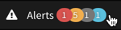

What are the alert states?
An alert can be in 5 states:
- CHECKING: The alert is being checked to see if the query and Alert fires conditions are being met. While firing alerts are still being checked to determine if the query and Alert resolves condition associated with the alert are still being met, they are not included in this filter. An alert resolves (transitions back to checking) when there are either no true values present within the time window, or the time window contains no data.
- FIRING: The alert is meeting the query and Alert fires conditions. An alert transitions to firing when a condition on a time series evaluates to at least one true value and no false values during a fixed time window.
- IN MAINTENANCE: The alert has an alert tag or a source or set of sources included in a source tag associated with an ongoing maintenance window. If an alert has a subset of reporting sources associated with in an ongoing maintenance window, then the state displays as CHECKING/IN MAINTENANCE. If an alert has a subset of reporting sources associated with an ongoing maintenance window but whose other sources are firing, the state displays as FIRING/IN MAINTENANCE.
- INVALID: The alert is timing out ( > 5 min query execution) or queries include inactive metrics or sources.
- SNOOZED: The alert is not checked to determine if the query and Alert fires conditions associated with the alert are being met.
How do alerting checks work?
The data values associated with that alert are checked according to the alert checking frequency property (default 1 minute) to determine whether the alert should fire or not based on the alert condition. If there is an alert condition such as ts(“requests.latency”) > 195 specified in the query, then all reported values that satisfy the condition are marked as true (1’s) and all reported values that do not satisfy the condition are marked as false (0’s). If no alert condition such as ts(“cpu.loadavg.1m”) is specified in the query, then all non-zero reported values are considered true and all zero reported values are considered false. If there is no reported data, then it is evaluated as neither true nor false. During the alerting check, if there is at least one true value present in the time window and no false values present, then the alert fires. Additionally:
- When an alert is currently not firing, the time window evaluated according to the checking frequency is controlled by the Alert fires property. For example, if the Alert fires property is set to 3 minutes, the time window being evaluated at the checking frequency is 3 minutes.
- When an alert is currently firing, the time window evaluated according to the checking frequency is controlled by the Alert resolves property. The point in time where the checking frequency approximate check occurs is unique to each alert. For example, one alert could be checked at 1:01:04p while another alert could be checked at 1:01:17p.
- The end time for the time window being evaluated according to the checking frequency is determined by: “alert check time (rounded down to nearest minute) - 1 minute”. For example, assume the Alert fires property is set to 5 minutes. If the alert check time is 1:09:32p, then the end time for the time window being evaluated would be 1:08:00p ((“1:09:32” - “0:00:32”) - “0:01:00”). Therefore the 5 minute time window would be 1:03:00p to 1:08:00p.
- Alerting checks evaluate minutely summarized (mean) data values. For example, if 5 data values are reported between 12:11:00p and 12:11:59p, then the average value of those 5 data values would be displayed at 12:11:00p. If you want a different summarization strategy, then you can use a 1 minute align() function in your query and specify the summarization method.
When does an alert fire?
An alert fires when its condition evaluates to at least one true value and zero false values presents within the given Alert fires time window. If there is an alert condition specified in the query, such as ts(“requests.latency”) > 195, then all reported values that satisfy the condition are marked as true (1’s) and all reported values that do not satisfy the condition are marked as false (0’s). If no alert condition is specified in the query, such as ts(“cpu.loadavg.1m”), then all non-zero reported values are considered true and all zero reported values are considered false. If there is no reported data, then it is evaluated as neither true nor false.
Alert example
In the following example, the threshold for the alert is set to 50%. The event window from 09:34-09:35 identifies the interval during which the metric crossed the threshold going up. The event window from 09:39-09:40 identifies the interval during with the metric crossed the threshold going down. The settings for the alert were Alert fires = 2 minutes, Alert resolves = 2 minutes, and Checking frequency = 1 minute. The alert fires around 09:37:09 and resolves at 09:41:59.

How do I determine how many alerts are firing?
The alerts icon in the task bar  shows the number of alerts firing of each severity.
When does an alert resolve?
An alert resolves when there are either no true values present within the given Alert resolves time window, or the Alert resolves time window contains no data. If no value is applied to the Alert resolves field, then the Alert fires value is applied.
What happens when an alert fires?
When an alert fires, the alert info is sent to targets listed in the Targets property. Targets can be email addresses, PagerDuty and VictorOps API keys, HipChat rooms, Slack channels, and webhooks. The maximum number of targets that can be associated with an alert is 10.
What are some examples of when an alert would or would not fire?
Alert condition: ts(cpu.loadavg.1m) > 4
- If the chart has one reported data value of 5 in the last X Alert fires, and no other points (no data), the alert will fire.
- If the chart has two reported data values of 5 and 3, both anywhere in the last X Alert fires, the alert will not fire.
- If the chart only has points <= 4 in the last X Alert fires, the alert will not fire.
- If the chart has many points in the last X Alert fires, all of which are > 4, the alert will fire.
A firing alert resolves in two cases:
- The condition is false for the entire last X minutes
- There is no data (no points reported) for the entire last X minutes
Alerting checks are based on data summarized every minute. This means that if you have a series of 9, 9, 9, 3, 9 in the same minute for the alert query above, the condition evaluates to true for that particular minute although there is a value of 3 reported. All alert queries are checked according to the checking frequency setting.
Why did my alert fire even though the conditions weren’t met?
In the majority of cases, an alert fires even though it looks like it shouldn’t have can arise from one of two scenarios:
- Late data values are reported after the alert fired. When this occurs, the alerting check initially sees one true value and no false values within the given alert fires field at the time of firing, but the late data values that are reported essentially change the true value to a false value. In these cases, the alert fires correctly but the chart associated with the alert that you view 5 or 10 minutes later may not show the true value the alerting check originally saw.
-
An aggregate function is used in the alert query and missing data was present for one or more underlying series at the time the alert fired. This tends to make up the majority of these cases. If there is at least one truly reported data value present at a given time slice for one of the underlying series, then Wavefront attempts to apply an interpolated value for all underlying series that did not report a value at that given time slice. For example, assume you are aggregating data for app-1, app-2, and app-3 using the sum() aggregate function. app-1 and app-3 reported values at 1:00:00p and 1:03:00p, while app-2 reported values at 1:00:00p, 1:01:00p, and 1:03:00p. In this case, an interpolated value would be applied for app-1 and app-3 at 1:01:00p since app-2 reported a value at that time slice.
Using the example above, assume that the end of the alerting check time window is 1:02:00p. In order to apply accurate interpolated values, there must be a reported value before and after the interpolated time slice. Since app-1 and app-3 don’t report a value until 1:03:00p, it’s impossible to interpolate a value for them at 1:02:00p. At 1:03:00p, the data values for app-1 and app-3 are reported and therefore interpolated values are retroactively applied to 1:02:00p for these sources. If the alerting check evaluates the data before the interpolated values are applied, then the chart you view 5 or 10 minutes later may not show the true value the alerting check originally saw.
If you still believe your alert shouldn’t have fired, then contact support for help.
What happens if I resolve an incident in PagerDuty before the alert was resolved in Wavefront?
If the alert is still currently firing in Wavefront and there is a change to the set of sources being affected, then those changes will trigger a new incident in PagerDuty. Changes to the set of sources being affected refers to newly affected sources being added to the list of existing sources that are being affected and/or a subset of the existing sources being affected are no longer affected.
Following the incident being resolved in PagerDuty, if the only alert status change that occurs is all affected sources are resolved, and thus the alert being resolved in Wavefront, then nothing will occur. No new incident will be logged into PagerDuty.